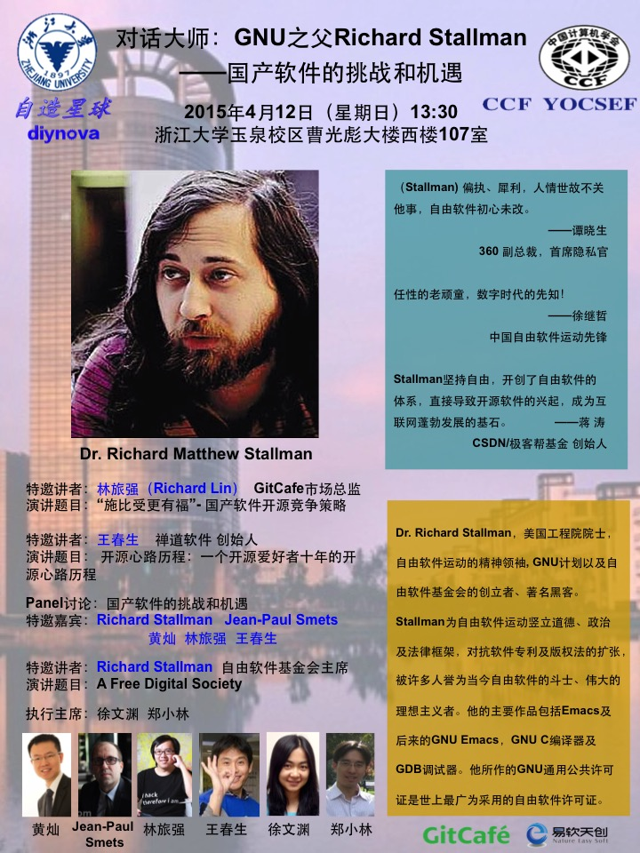

说明
本次活动由CCF YOCSEF杭州与自造星球主办，GitCafe、易软天创、GDG Hangzhou、LUG@ZJU及人民邮电出版社协办。
活动现场将安排Richard Stallman首发签售他的传记《若为自由故》一书。
本次活动无须报名，现场可容纳约300人。
安排
时间：2015年4月12日(星期日) 13:30-17:30
地点：浙江大学玉泉校区曹光彪大楼(西楼)107室
13:00-13:30 签到
13:30 论坛开始
- 特邀讲者：林旅强 (Richard Lin) GitCafe市场总监 演讲题目：“施比受更有福”－国产软件开源竞争策略
- 特邀讲者：王春生 禅道软件创始人 演讲题目：开源心路历程：一个开源爱好者十年的开源心路历程
- 特邀嘉宾：Richard Stallman、Jean-Paul Smets、黄灿、林旅强、王春生 Panel讨论：国产软件的挑战和机遇
- 特邀讲者：Richard Stallman 自由软件基金会主席 演讲题目：A Free Digital Society
链接
- CCF YOCSEF通知：
http://www.yocsef.org.cn/sites/yocweb/hangzhou.jsp?contentId=2855175558928 - 人民邮电出版社-信息技术分社微博：
http://weibo.com/2630618281/CbnWgjmUG - 《若为自由故》中文版：
http://faifchs.github.io/ - FSF活动通知：
http://www.fsf.org/events/rms-20150412-hangzhou